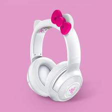
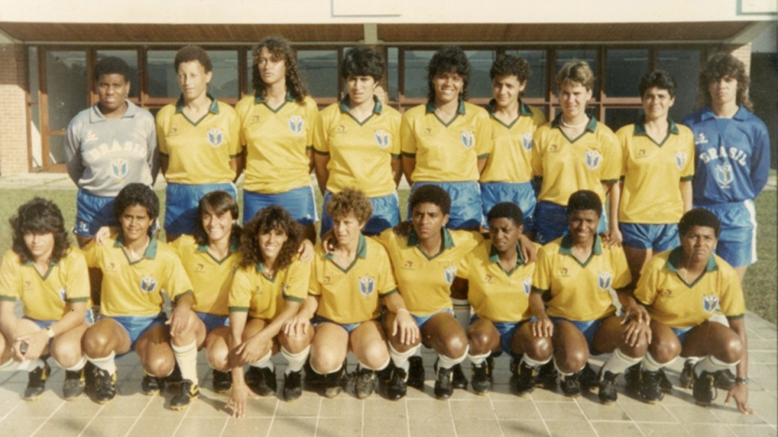
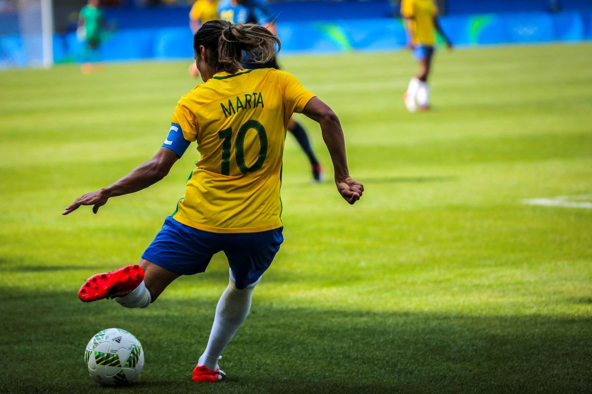
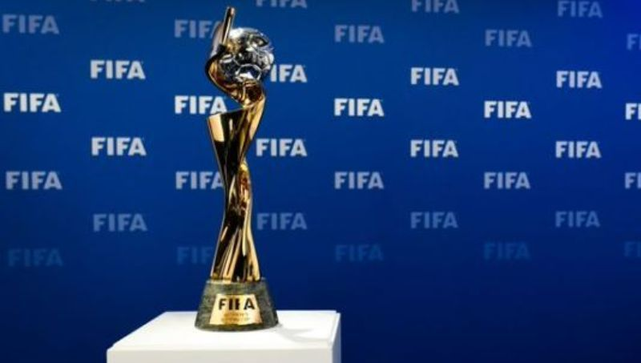

FONE GAMER ROSA RAZER
Esse e nosso fone gamer feminino razer para computadores , acompanha adaptador com a entrada do microfone e do audio r$140,90


Proibição e Retomada (Décadas de 1920 a 1960)
Em muitos países, as autoridades esportivas e culturais proibiram o futebol feminino nas décadas de 1920 a 1960, preocupações com a "feminilidade" e alegando que o esporte não era adequado para mulheres. No entanto, o interesse no futebol feminino persistiu em níveis locais e amadores.Décadas de 1970 e 1980 - Surgimento de Competições Internacionais
A década de 1970 viu um ressurgimento gradual do futebol feminino, com a criação de equipes nacionais e a realização de jogos internacionais não-oficiais. Em 1971, a FIFA reconheceu oficialmente o futebol feminino, e a primeira Copa do Mundo Feminina foi realizada em 1991 na China.

Profissionalização e Crescimento (Décadas de 1990 e 2000)
Nas décadas de 1990 e 2000, o futebol feminino começou a ganhar mais visibilidade e atenção. Ligas nacionais e competições de clubes começaram a se desenvolver em várias partes do mundo. A Copa do Mundo Feminina continuou a crescer em importância e popularidade.Século XXI - Expansão e Reconhecimento
O futebol feminino continuou a crescer e se expandir, com mais países investindo em suas seleções nacionais e ligas domésticas. A Copa do Mundo Feminina ganhou destaque e a atenção da mídia, e mais patrocinadores e investidores passaram a apoiar o esporte.

Avanços em Igualdade e Reconhecimento (Década de 2010 em Diante)
A luta pela igualdade de gênero no esporte se intensificou, levando a discussões sobre disparidades de pagamento, recursos e oportunidades entre o futebol masculino e feminino. Movimentos como o #MeToo também trouxeram à tona questões de assédio e discriminação no futebol feminino.Crescimento Contínuo e Visibilidade (Atualidade)
O futebol feminino continua a crescer em popularidade e reconhecimento. As transmissões televisivas, patrocínios e investimentos têm aumentado, impulsionando o nível de competição e a qualidade do jogo. Mais mulheres têm a oportunidade de se dedicar profissionalmente ao esporte.
